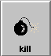
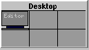

The Button Bar
The button bar lies above the task bar at the bottom of your virtual screen.
This bar provides information, easy access to some frequently used programs,
and a couple of handy utilities. Find these items, from left to right on
the Button Bar:
The Button Bar bar provides the time as given by xclock, and
the load on your host, as given by xload.
You can start the following programs by clicking on their icon on the
Button Bar:
-
a terminal window, using xterm,
-
TkDesk, a file manager full of features, including a built-in text
editor,
-
TkNet, a Network Manager that shows, among other things, your Internet
Connection Status, and
-
Netscape, the WWW browser you are using.
The last two entries on the Button Bar are two utilities: the "Kill
Button" and the "Pager".
-
The "Kill Button"
is used to shut down a stubborn application which will not shut down using
it's own "Quit", or "Exit" methods, or an window without such conveniences.
(Start "Oclock" from the menu for an example.) It's use is simple: click
on the "kill" button, (your cursor should change to a skull and crossbones)
and then click on the offending window. (If you double clicked on the kill
button, you can start a new Button Bar by selecting "Modules", and then
"Buttons" from the menu. ;)
-
The "Pager"
is a map of your six "Virtual Desktops", giving you an indication of which
desktop you are viewing at present. You can change Virtual Desktop by clicking
on the rectangel representing the desired Desktop. This feature is usefull
if you find that your desktop is cluttered, and yet you would like to start
up a few more applications.
Help Menu